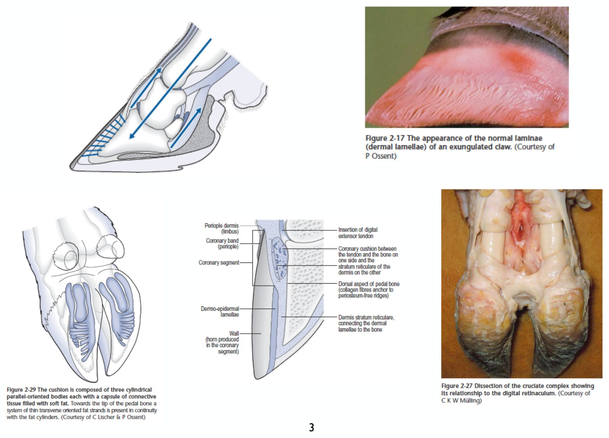
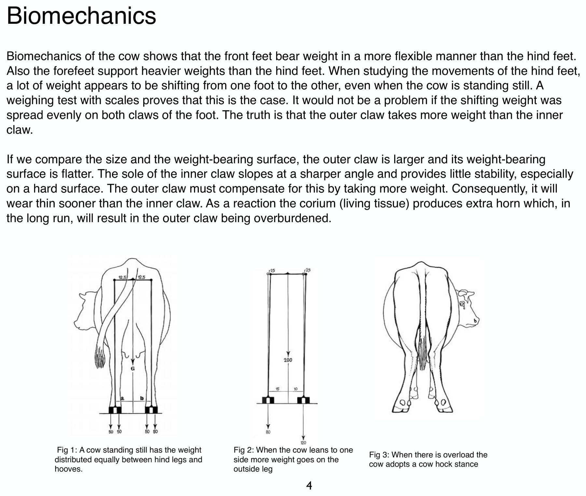
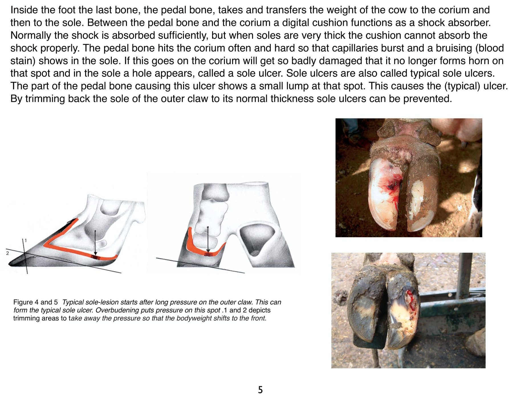
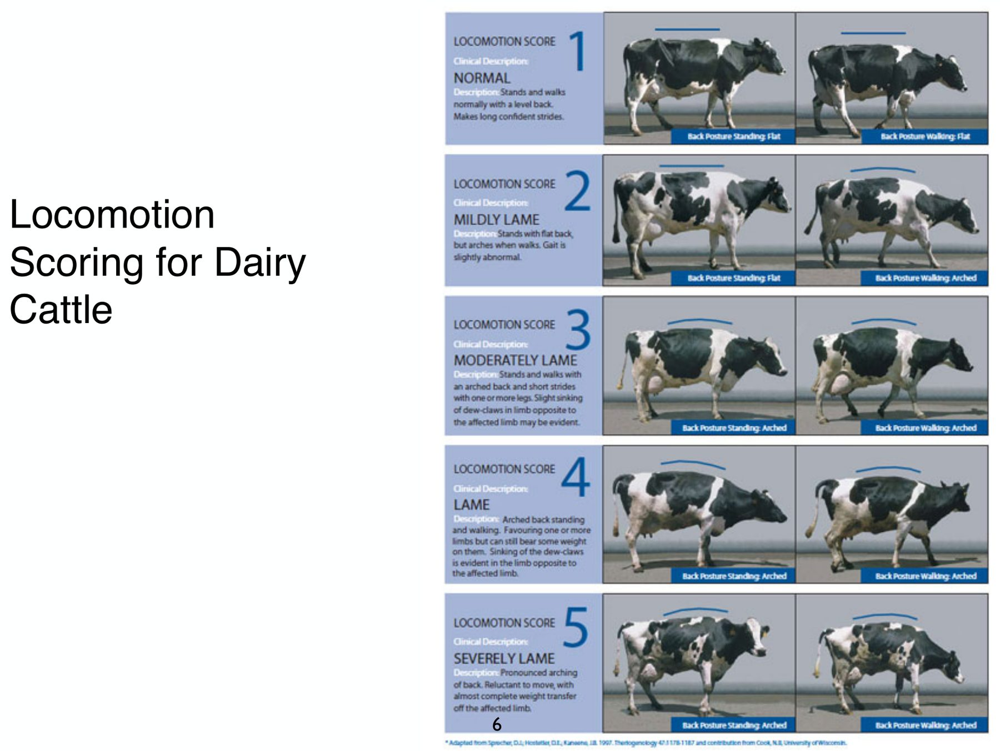
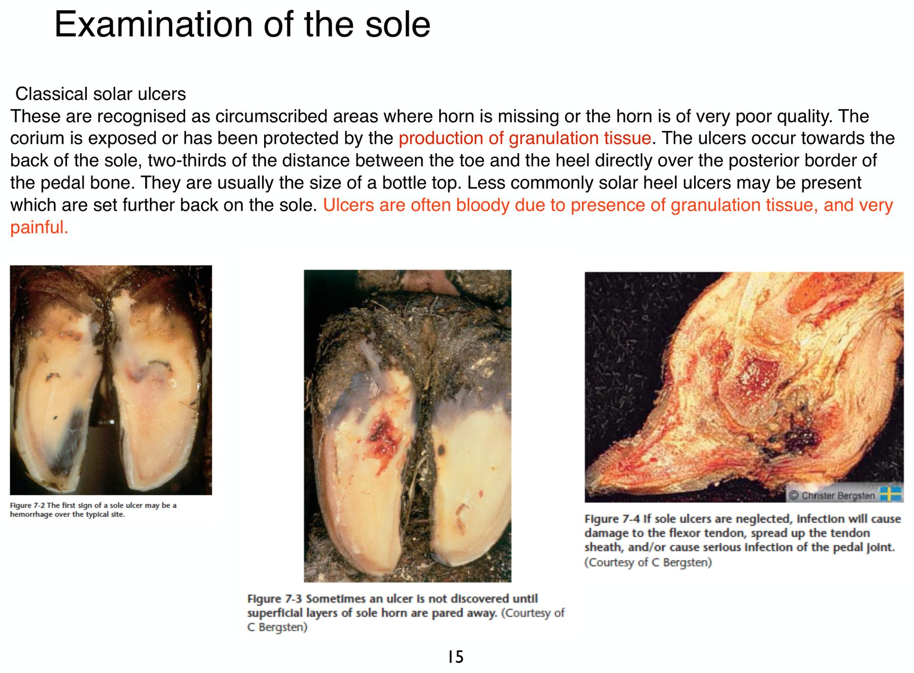
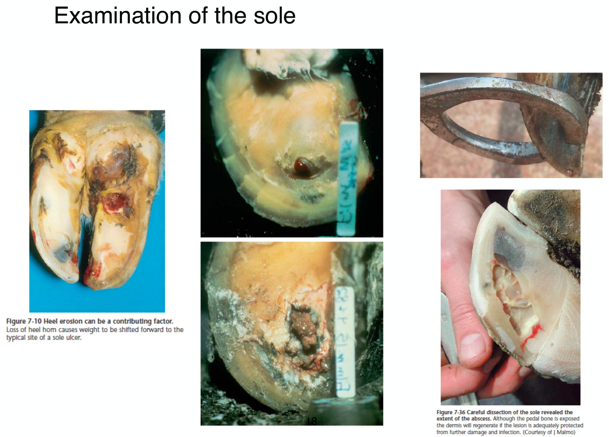
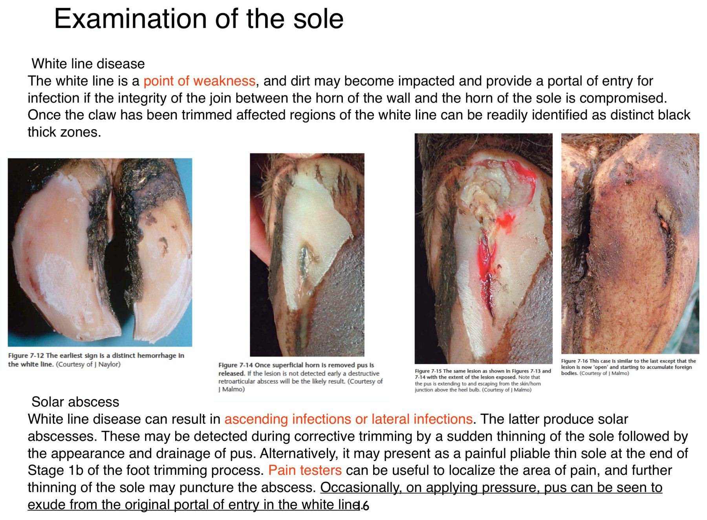
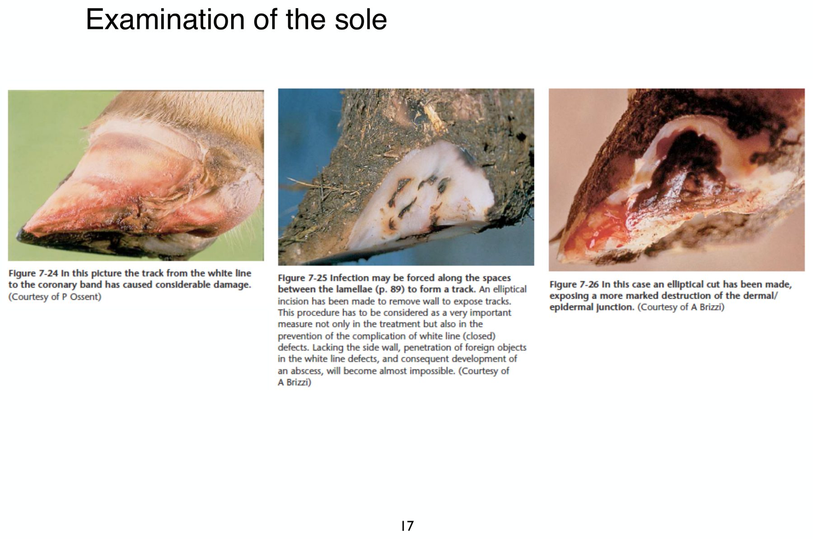
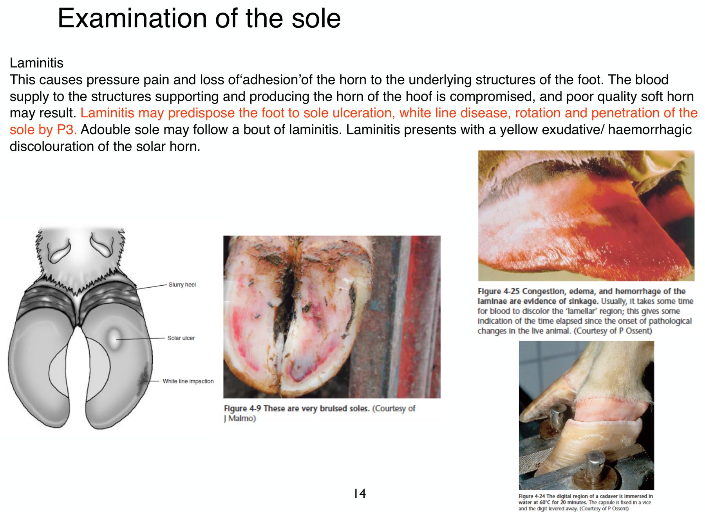

重點摘要
跛行是乳牛場最常見、損失最大的問題之一，絕大多數跛行來自蹄部。講義的順序是：先懂蹄的構造與受力（為什麼總是後肢外側蹄出事）→ 怎麼評估跛行（跛行評分、腿姿評分、站立觀察、抬腳檢查）→ 認得十種常見病灶（每種病灶有固定的好發位置）→ 怎麼修蹄（荷蘭五步驟）→ 處置時的靜脈區域麻醉。
整份講義其實在講一條因果鏈：後肢外側蹄負重較多 → 角質長太多、蹄底太厚 → 趾墊無法緩衝 → 蹄骨壓傷真皮 → 出血 → 蹄底潰瘍。修蹄的目的就是把這條鏈切斷。
為什麼是後肢外側蹄
跛行 1–5 分、腿姿 1–3 分
位置決定診斷
五步驟、靜脈區域麻醉
- 後肢外側蹄最常出問題：外側蹄較大、承重面較平，內側蹄底斜度大、不穩，所以外側蹄承擔較多重量 → 磨損快 → 真皮反應性地長出更多角質 → 長期負擔過重。
- 典型蹄底潰瘍（Sole Ulcer, SU）的位置固定：蹄底後方、蹄尖到蹄踵距離的 2/3 處，正好在蹄骨後緣（屈肌突）下方，大小約一個瓶蓋，常因肉芽組織而出血、非常痛。
- 蹄底潰瘍的成因鏈：蹄底太厚 → 趾墊無法吸收衝擊 → 蹄骨反覆撞擊真皮 → 微血管破裂 → 蹄底出血斑 → 真皮受損到不再長角質 → 潰瘍。預防：把外側蹄蹄底修回正常厚度。
- 白線是蹄的弱點：蹄壁角質與蹄底角質的接合處，泥沙卡入就成為感染入口。感染往上走（沿蹄葉到冠狀帶）或往旁邊走（形成蹄底膿瘍）。修蹄後看到的黑色粗帶就是病灶。
- 趾皮炎（Digital Dermatitis, DD）＝「草莓蹄踵」：蹄踵球之間的皮膚，鮮紅、發亮、像切半的草莓，碰到極痛；慢性型為疣狀皮膚炎，長出角質絲。
- 冠狀帶的水泡與糜爛要想到全身性疾病：水泡或破掉的水泡 → 懷疑口蹄疫（Foot-and-Mouth Disease, FMD）；糜爛 → 懷疑黏膜病（牛病毒性下痢病毒造成的 Mucosal Disease）。
- 蹄葉炎（Laminitis）是很多蹄病的上游：血液供應受損 → 角質品質差、變軟、黏著力下降 → 容易續發蹄底潰瘍、白線病、蹄骨旋轉與穿出蹄底；蹄底呈黃色滲出或出血變色，可能出現雙層蹄底。
- 荷蘭五步驟修蹄的數字：蹄尖長度從冠狀帶量 7.5 cm、蹄尖蹄底厚度保留 0.5–0.7 cm、蹄角度 45–50°；先修外側蹄配合內側蹄等長等高，再把潰瘍處修成淺碗狀。
- 2021 期中「Hoof disease（填圖）」、2023（B09 口述）許凱程第一題蹄病「10 個挖 5 個填空」：就是第 6 節的十種病灶位置圖（講義 p.9 Figure 7.2）。十個名稱與位置要能直接寫出英文與中文。
- 其餘可能考法見第 10 節（標「推測」）。
講義文字很精簡，沒有講病原、治療和預後。這些我依一般大動物外科知識補上，凡是標「補充」的都不是講義內容，考前請以老師上課說的為準。圖片為老師講義的投影片截圖。藍框「共筆補充」取自 B06 共筆（2020 年許凱程老師講同一份講義），是老師上課口述的內容。
蹄部解剖 Functional Anatomy of the Bovine Foot
每一隻腳有兩個主蹄（內側蹄、外側蹄，即第 3、4 趾）和兩個副趾（懸蹄，第 2、5 趾）。認得下面這些構造，後面每一種疾病的位置與併發症才看得懂。
| 構造 | 是什麼 | 臨床意義 |
|---|---|---|
| P1、P2、P3 近節、中節、遠節趾骨 | P3 又叫蹄骨（pedal bone、coffin bone），整個包在角質蹄殼內 | 蹄葉炎時 P3 可能旋轉、下沉，甚至穿出蹄底 |
| 近端與遠端趾間關節 PIP／DIP joint | P1–P2 之間、P2–P3 之間的關節；DIP 就是蹄關節（pedal joint、coffin joint） | 蹄底潰瘍、白線病、腐蹄病往深處擴散時，會造成遠端趾間關節化膿性關節炎，冠狀帶上方嚴重腫脹 |
| 舟狀骨與舟狀囊 Navicular bone／bursa | 遠端籽骨，位在 P3 後方，深屈肌腱從它後面滑過，中間隔著舟狀囊 | 蹄踵區的深部感染可能侵犯舟狀囊 |
| 淺、深屈肌腱及腱鞘 SDF／DDF tendon and sheath | 深屈肌腱（Deep Digital Flexor, DDF）止於 P3 的屈肌突 | 蹄底潰瘍放著不管 → 感染破壞屈肌腱、沿腱鞘往上擴散、侵犯蹄關節（講義 Fig 7-4） |
| 趾墊 Digital cushion | P3 與蹄底真皮之間的脂肪墊，由三條平行的圓柱狀脂肪體組成，外包結締組織，往蹄尖方向分成細的橫向脂肪束 | 避震器：吸收 P3 傳下來的衝擊。蹄底太厚時趾墊無法吸收，P3 就直接壓傷真皮 |
| 真皮 Corium | 有血管、會生長角質的活組織 | 壓傷 → 出血 → 停止長角質 → 潰瘍；暴露時會長肉芽組織 |
| 蹄葉 Laminae（dermal lamellae） | 蹄壁內面的真皮葉片，與角質葉片交錯咬合，把 P3 懸吊在蹄殼內（P3 的懸吊裝置） | 蹄葉炎時充血、水腫、出血，P3 下沉（講義 Fig 4-25）；白線病的感染可沿蹄葉間隙往上走（Fig 7-25） |
| 白線 White line | 蹄壁角質與蹄底角質的接合處 | 結構上的弱點，是白線病的感染入口 |
| 冠狀帶、蹄緣 Coronary band／periople | 蹄壁角質由冠狀帶往下生長；蹄緣是冠狀帶上方的薄層角質 | 冠狀帶的病灶：趾皮炎、外傷、口蹄疫水泡、黏膜病糜爛；冠狀帶上方腫脹 → 想到關節或深部感染 |
| 蹄踵 Heel（bulb） | 蹄底後方較軟的角質區 | 蹄踵糜爛、趾皮炎的好發處 |

- 關節感染：牛的遠端趾關節（DIP）感染，常直接用電鑽破壞關節囊、清掉骨頭——藥物不容易進關節腔，而且牛不像馬需要運動，少一個關節影響不大。舟狀骨感染也是鑽通或整塊移除。
- 肌腱：淺屈肌腱（SDF）與深屈肌腱（DDF）各分岔到兩蹄，一隻腳共四條；蹄的感染通常沿肌腱、腱鞘往上走，不走血行，擠壓腱鞘會流膿。
- 冠狀帶：新蹄壁從這裡長出；這裡腫脹，可推定感染已進入關節腔。
- 真皮與趾墊：趾墊是脂肪緩衝層，過瘦的牛趾墊不夠厚，較容易有蹄病。
生物力學與蹄底潰瘍成因重要
這一節回答「為什麼總是後肢外側蹄」——這是整份講義最核心的觀念，後面的修蹄方法也是從這裡推出來的。
前肢與後肢的受力差異
- 前肢承重比後肢重，但承重方式較有彈性。
- 後肢即使站著不動，重量也一直在兩腳之間移來移去（磅秤測試證實）。
- 如果移動的重量平均分給兩個蹄就沒問題，但實際上外側蹄承受的重量比內側蹄多。
為什麼外側蹄承重多
| 後肢外側蹄 | 後肢內側蹄 | |
|---|---|---|
| 大小 | 較大 | 較小 |
| 承重面 | 較平 | 蹄底斜度較大，穩定性差，在硬地面上尤其明顯 |
| 結果 | 要代償內側蹄的不穩 → 承重更多 → 磨損更快 → 真皮反應性地長出額外角質 → 長期下來負擔過重 | — |
前肢的情況相反：前肢內側蹄較大、承重較多，所以前肢的病灶多在內側蹄。記法：「後外、前內」。

蹄底潰瘍的成因鏈
- 正常情況下，P3 把牛的重量傳給真皮、再傳給蹄底；P3 與真皮之間的趾墊負責避震。
- 造成潰瘍的那個位置，P3 上有一個小突起（屈肌突），所以潰瘍總在同一個地方，稱為典型蹄底潰瘍。
- 預防：把外側蹄的蹄底修回正常厚度。

- 分娩前後：荷爾蒙變化讓 P3 的懸吊組織變鬆，P3 在蹄殼內下沉，更容易壓到蹄底真皮。
- 體態變瘦：趾墊是脂肪組織，泌乳初期大量掉體重時趾墊變薄，緩衝變差。
- 長時間站在水泥地上：例如牛床不舒服、躺臥時間少。
- 蹄踵糜爛：蹄踵角質流失，重量往前移到典型潰瘍位置（講義 p.18 Fig 7-10 也提到）。
教科書依重心寫「前肢負重大於後肢」，但老師說實際上牛從趴到站是先蹬後肢，後肢負重很重要；負重越重後肢越外八、兩飛節越靠近。理想的修蹄頻率是半年一次；沒有定期修蹄，蹄底變厚、重心偏向蹄踵、趾墊無法避震 → 真皮微血管破裂、蹄底瘀血 → 施力點不再長角質 → 典型蹄底潰瘍。
跛行評分與腿姿評分 Locomotion Score & Leg Score
跛行評分看「走路時背有沒有拱」，腿姿評分看「後腿從後面看外轉多少度」。兩者都用來篩出需要修蹄或治療的牛，也用來評估牛群整體的蹄部健康。
乳牛跛行評分（1–5 分）
| 分數 | 狀態 | 站立與行走表現 | 處置 |
|---|---|---|---|
| 1 | 正常 Normal | 站立與行走時背部都是平的；步伐長、有自信；後蹄落在前蹄的位置 | 良好 |
| 2 | 輕度跛行 Mildly lame | 站立時背平，行走時拱背；步態稍不正常，頭較低、往前伸 | 需要注意 |
| 3 | 中度跛行 Moderately lame | 站立與行走都拱背；一條或多條腿步伐變短；患肢對側的懸蹄輕微下沉 | 今天就要治療 |
| 4 | 跛行 Lame | 站立與行走都拱背；偏好使用某幾條腿，但患肢仍能部分承重；患肢對側的懸蹄明顯下沉 | 立即治療與照護 |
| 5 | 嚴重跛行 Severely lame | 明顯拱背；不願移動，患肢幾乎完全不承重；寧可躺著，起身困難 | 需要加護照顧與專業治療 |
分 1、2、3 分只要看背：站立平＋走路平 → 1 分；站立平、走路拱 → 2 分；站立也拱 → 3 分以上。3 分以上再看患肢還能不能承重來分 4、5 分。

腿姿評分 Leg Score（1–3 分）
從後面看後腿的站姿，量蹄尖往外轉的角度。分數跟內外側蹄的高度差，以及母牛放腳的方式有關：蹄底有痛點時，母牛會把腳往外轉來減輕疼痛，在濕滑地面上更常見，走路時也會把重量放在蹄踵。
| 分數 | 外轉角度 | 意義 |
|---|---|---|
| 1 | 0–17° | 理想狀態；但仍可能有感染或蹄底出血 |
| 2 | 17–24° | 放腳的位置可以更好；表示腐蹄病的發生率可能偏高，或需要定期矯正修蹄 |
| 3 | > 24° | 不理想；這頭或這群牛需要立即處理（修蹄並治療） |
如果牛群中 2 分、3 分的比例很高，要檢討修蹄的技術和頻率，以及其他影響站姿的因素。
跛行評分是判定跛行的黃金標準；有經驗的獸醫在 2 分就能發現，牧場人員最好在 3 分時就通報。4 分的牛會因為痛而看自己的腳，後腳步伐踩不到前腳腳印上。腿姿 3 分（嚴重外八）隨時可能劈腿，一旦劈腿基本上就會淘汰。
站立觀察與蹄部檢查 Inspection & Examination
先在牛站著時從外面看蹄壁、冠狀帶和蹄形，再抬腳檢查蹄底和趾間。每一種外觀都對應幾個要想到的診斷。
站立時的近距離觀察
| 看到什麼 | 要想到什麼 |
|---|---|
| 蹄壁水平裂 Horizontal fissure | 水平裂一路長到蹄尖時，蹄尖一塊角質會提早斷掉 → 斷蹄尖（broken toe）。 最簡單的水平溝叫「困苦溝（hardship groove）」，來自突然換飼料，或發燒性疾病（例如子宮炎）。離冠狀帶最遠的那條溝，代表分娩的時間點（Fig 4-7）。 |
| 蹄壁垂直裂 Vertical fissure | 蹄壁縱向裂開 |
| 冠狀帶病灶 | 趾皮炎或外傷 |
| 冠狀帶上方嚴重腫脹 | 遠端趾間關節化膿性關節炎、腐蹄病，或白線病的感染往上擴散 |
| 冠狀帶水泡、糜爛 | 懷疑口蹄疫（FMD）：仔細找水泡或破掉的水泡；懷疑黏膜病：可能看到糜爛 |
| 蹄過長、螺旋蹄 Overgrown／corkscrew claw | 一眼就看得出來。螺旋蹄是後肢外側蹄嚴重旋轉 |
| 蹄形改變 | 慢性蹄葉炎、螺旋蹄。慢性蹄葉炎：蹄壁有整條的水平脊，蹄背凹陷 → 「土耳其拖鞋（Turkish slipper）」外觀；蹄尖變方、蹄背平而凹、冠狀帶粗糙有角質邊（Fig 4-20、4-21） |
冠狀帶或趾間出現水泡時，要先排除口蹄疫，並依規定通報，不要直接當成一般蹄病處理。補充（非講義）：口蹄疫的水泡也會出現在口腔、舌、乳頭，常伴隨發燒、流涎；黏膜病則以口腔與消化道的糜爛為主，較少水泡。
抬腳檢查
牛最常見的跛行原因：腐蹄病、白線病、蹄底潰瘍、尖銳物刺穿蹄部、蹄踵糜爛、趾皮炎、蹄葉炎。
- 遠端肢周圍皮膚腫脹：腐蹄病的腫脹位在蹄踵與副趾之間，是皮膚與皮下組織發炎；兩蹄可能被撐開，趾間皮膚壞死。
- 遠端肢整體嚴重腫脹：表示滑膜構造感染，包括遠端與近端趾間關節。
- 注意異物：趾間卡石頭、釘子、卡在蹄底的石頭。
講義提到用蹄鉗（pain tester）夾壓蹄底，找出痛點的位置，用來定位蹄底膿瘍。器械外觀見第 5 週：手術器械圖鑑的蹄部器械。
- 水平裂：營養或日糧來源不穩定，在蹄上留下像年輪的紋路，可能一路裂到蹄尖斷掉（broken toe），嚴重度不如垂直裂。
- 垂直裂：可能一路往上感染到冠狀帶；可在裂口上方切一道水平切口，阻止繼續往上裂。
- 有感染的傷口不包紮：修完蹄用木塊或橡膠墊高健康的那一側，讓患蹄不負重、不碰糞尿；傷口約 3–4 週恢復，墊塊 4–6 週自然磨掉。
- 冠狀帶腫脹時，老師的做法是用電鑽鑽過關節、穿一條橡膠管保持開放，每天由管子灌優碘。
病灶位置圖：位置決定診斷必考考古填圖
每一種蹄病都有固定的好發位置。點下圖的編號，下方會顯示那個疾病的重點；點「看完整說明」跳到各論。圖為後肢、從蹄底往上看，左邊是外側蹄（L），右邊是內側蹄（M），上方是蹄踵、下方是蹄尖。
※ 自繪示意圖，依講義 p.9（Figure 7.2）的病灶編號與位置重畫。4、6、8 都在趾間，實際上分布在整條趾間裂；7 蹄葉炎的蹄底出血可以出現在任何一個蹄。
十種常見蹄病各論重要
先用一張表把十種病放在一起比較，再逐一細講。蹄病可以分成兩大類：皮膚的感染性疾病（趾皮炎、趾間皮膚炎、腐蹄病、蹄踵糜爛）和角質與真皮的疾病（蹄葉炎、蹄底潰瘍、白線病、蹄尖潰瘍、穿刺傷），趾間增生介於兩者之間。
| # | 疾病 | 類型 | 好發位置 | 關鍵外觀 | 病因與病原（補充） |
|---|---|---|---|---|---|
| 1 | 趾皮炎 Digital Dermatitis, DD | 皮膚，感染 | 後肢蹄踵球之間的皮膚 | 鮮紅發亮、像切半的草莓，碰到極痛；慢性型長出角質絲 | 螺旋體 Treponema spp. 為主的多菌感染；潮濕、髒污的環境；具傳染性 |
| 2 | 蹄底潰瘍 Sole Ulcer, SU | 角質與真皮 | 後肢外側蹄，蹄底後方 2/3 處、偏軸側 | 局部無角質，真皮外露或長肉芽，出血、極痛，約瓶蓋大 | 蹄底過厚、外側蹄負擔過重、蹄葉炎、蹄踵糜爛、分娩前後 P3 下沉 |
| 3 | 白線病 White Line Disease, WLD | 角質與真皮 | 後肢外側蹄軸外側的白線，蹄踵與蹄壁交界處 | 白線出血 → 黑色粗帶 → 化膿；感染往上或往旁邊走 | 泥沙卡入白線；蹄葉炎讓白線變寬變弱 |
| 4 | 腐蹄病 Interdigital Necrobacillosis（foul in the foot） | 皮膚與皮下，感染 | 趾間皮膚，腫脹在蹄踵與副趾之間 | 急性跛行、趾間對稱腫脹、兩蹄被撐開、皮膚裂開壞死、惡臭 | Fusobacterium necrophorum 為主，常合併其他厭氧菌；趾間皮膚受傷為入口 |
| 5 | 蹄踵糜爛 Heel Erosion（slurry heel） | 角質，感染 | 蹄踵角質 | 蹄踵角質呈 V 形溝或坑洞狀流失 | 長期潮濕與糞尿；常接續趾間皮膚炎（Dichelobacter nodosus） |
| 6 | 趾間皮膚炎 Interdigital Dermatitis, ID | 皮膚，感染 | 趾間皮膚 | 表淺發炎、滲出、有臭味，通常不腫、跛行輕微 | Dichelobacter nodosus；潮濕環境 |
| 7 | 蹄葉炎／蹄底出血 Laminitis／sole haemorrhage | 真皮（全身性） | 多個蹄、整個蹄底與蹄葉 | 蹄底黃色滲出或出血變色；角質軟；雙層蹄底；慢性為拖鞋蹄 | 瘤胃酸中毒、分娩前後、內毒素血症（子宮炎、乳房炎）、硬地面 |
| 8 | 趾間增生 Interdigital Hyperplasia | 皮膚增生 | 趾間皮膚，多在後肢 | 趾間長出一塊硬的皮膚組織（又叫 corn、tyloma） | 遺傳（體型大的品種）、趾間皮膚長期受刺激（趾間皮膚炎、趾皮炎）、兩蹄張開 |
| 9 | 穿刺傷 Punctured Sole | 角質與真皮 | 蹄底任何位置 | 蹄底有釘子、石頭或刺入孔 | 尖銳異物；蹄底變薄時更容易 |
| 10 | 蹄尖潰瘍 Toe Ulcer | 角質與真皮 | 蹄尖的蹄底 | 蹄尖處蹄底穿透、真皮外露 | 蹄尖蹄底太薄：修蹄過度、新水泥地或長距離行走過度磨損 |
※ 「病因與病原」欄除了蹄底潰瘍、白線病、蹄葉炎的部分機轉之外，都是補充內容，講義沒有列出病原。
講義：病灶常見於蹄踵球之間的皮膚，表面生肉、發亮，形狀和顏色像切成一半的草莓，碰到非常痛。慢性型稱為疣狀皮膚炎（verrucose dermatitis），會長出一叢角質絲。
- 病原：以螺旋體（Treponema spp.）為主的多種細菌混合感染，1974 年在義大利首次描述，所以也叫 Mortellaro 病。具傳染性，是牛群問題，不只是單一頭牛的問題。
- 危險因子：潮濕、糞尿多的地面，引進帶原牛。
- 個體治療：清潔、擦乾病灶後局部噴或塗抗生素，例如 oxytetracycline（局部噴劑或敷料），可視情況包紮；通常不需要全身性抗生素。
- 牛群控制：定期蹄浴，常用硫酸銅、福馬林、硫酸鋅等；改善地面衛生、保持乾燥。
- 使用任何藥物都要遵守停乳期與停藥期規定。
講義：典型蹄底潰瘍是一塊邊界清楚、沒有角質或角質品質很差的區域，真皮外露，或已經長出肉芽組織保護。
- 位置：蹄底後方、蹄尖到蹄踵距離的 2/3 處，正好在蹄骨後緣上方。
- 大小：通常約一個瓶蓋大。
- 特徵：因為有肉芽組織，常會出血，而且非常痛。
- 較少見的是蹄踵潰瘍，位置比典型潰瘍更後面。
- 最早的徵兆是典型位置上的出血（Fig 7-2）；有時候要把表層蹄底角質削掉才會發現潰瘍（Fig 7-3）。
- 放著不管：感染會傷害屈肌腱、沿著腱鞘往上擴散，或造成蹄關節的嚴重感染（Fig 7-4）。
- 蹄踵糜爛是促成因素：蹄踵角質流失，重量往前移到典型潰瘍的位置（Fig 7-10）。


- 依荷蘭五步驟修蹄：先做功能性修蹄，再把潰瘍周圍修成淺碗狀（第 3 步）。
- 移除鬆脫、底下已分離的角質，露出健康邊緣，不要傷到肉芽組織。
- 在健康的那個蹄（通常是內側蹄）黏上蹄墊（木塊或橡膠塊），讓患蹄完全離地（第 4 步），一般維持數週，之後回診拆除。
- 可給非類固醇消炎藥止痛（例如 meloxicam、flunixin meglumine；途徑與停藥期依仿單）。
- 潰瘍本身通常不需要全身性抗生素；有深部感染（腱鞘、蹄關節）時另外處理，見「麻醉、治療與預後」。
講義：白線是蹄的弱點。蹄壁角質和蹄底角質的接合一旦不完整，泥沙就會卡進去，成為感染的入口。修蹄之後，病灶在白線上看起來是明顯的黑色粗帶。
- 最早的徵兆：白線上一塊明顯的出血（Fig 7-12）。
- 兩種擴散方向：
- 往上（ascending）：沿著蹄葉之間的空隙往上走，形成一條通道到冠狀帶，在蹄踵上方的皮膚與角質交界處破出排膿（Fig 7-15、7-24、7-25）。這也是「冠狀帶上方腫脹」的原因之一。
- 往旁邊（lateral）：形成蹄底膿瘍。
- 發現晚會變成破壞性的關節後膿瘍（retroarticular abscess）（Fig 7-14）。
- 病灶「打開」之後，會開始堆積異物（Fig 7-16）。
蹄底膿瘍怎麼找到
- 矯正修蹄時，蹄底突然變薄，接著出現膿、流出。
- 或是修蹄第 1b 階段結束時，摸到一塊會痛、按得下去、很薄的蹄底。
- 用蹄鉗定位痛點，再削薄蹄底就可能戳破膿瘍。
- 有時候一壓，膿會從白線上原本的入口滲出來。
處置的重點：把蹄壁開成橢圓形
沿著感染通道，用橢圓形切口去除蹄壁，把通道完全暴露（Fig 7-25、7-26）。講義特別強調這是非常重要的步驟：不只是治療，也能避免白線出現封閉的缺損。如果缺少側壁、讓白線缺損封閉起來，異物就會刺入，接著又形成膿瘍，幾乎無法避免。


最常見於後肢外側蹄軸外側（遠離趾間那一側）的白線，蹄踵和蹄壁交界處，這裡承重大、白線最寬。治療原則是開放引流，移除所有底下已分離的角質，在健康蹄黏蹄墊；引流充分時通常不需全身性抗生素。
講義：腐蹄病是蹄踵與副趾之間的皮膚腫脹，來自皮膚與皮下組織發炎。兩個蹄可能被撐開，趾間皮膚壞死。如果感染侵犯遠端肢的滑膜構造（遠端與近端趾間關節），整個遠端肢會嚴重腫脹。腿姿評分 2 分的牛群，可能表示腐蹄病發生率偏高。
- 病原：Fusobacterium necrophorum 為主，常合併其他厭氧菌（例如 Porphyromonas、Prevotella 屬）；趾間皮膚受傷（石頭、粗糙地面、長期潮濕）是入口。
- 症狀：突然發生的嚴重跛行（常單肢）、發燒、食慾與乳量下降；趾間與冠狀帶對稱腫脹，兩蹄張開；趾間皮膚裂開、壞死組織、特殊惡臭。
- 治療：這是少數一定要早期全身性抗生素的蹄病。常用 penicillin（IM）、oxytetracycline（IV／IM）、ceftiofur（IM／SC）、磺胺類（IV／PO）；清創、局部處理，可加非類固醇消炎藥。早期治療預後好，延誤則可能變成遠端趾間關節化膿性關節炎。
- 劑量、停乳期與停藥期依仿單與台灣法規。
講義：出現在最常見跛行原因的清單中；蹄踵角質流失讓重量往前移到典型蹄底潰瘍的位置（Fig 7-10），所以是蹄底潰瘍的促成因素。講義 p.14 的示意圖標為 slurry heel（糞尿蹄踵）。
長期站在糞尿與潮濕環境中，蹄踵角質出現 V 形溝或坑洞，嚴重時整個蹄踵角質流失。常與趾間皮膚炎一起出現（同樣與 Dichelobacter nodosus 有關）。處置：修除鬆脫角質、讓蹄踵保持乾燥、蹄浴、改善地面衛生。
講義：列在病灶位置圖（Figure 7.2）中，位於趾間。
| 趾間皮膚炎 | 腐蹄病（趾間壞死桿菌病） | |
|---|---|---|
| 深度 | 表淺，只在表皮 | 深達皮下組織 |
| 腫脹 | 通常沒有 | 明顯、對稱腫脹，兩蹄張開 |
| 跛行與全身症狀 | 輕微，不發燒 | 突然、嚴重，常發燒 |
| 病原 | Dichelobacter nodosus | Fusobacterium necrophorum |
| 治療 | 局部處理、蹄浴 | 全身性抗生素 |
講義：蹄葉炎造成壓痛，並讓角質與蹄內構造之間的「黏著」變差。支持與製造角質的構造血液供應受損，結果長出品質差的軟角質。
- 續發問題：蹄底潰瘍、白線病、P3 旋轉、P3 穿出蹄底。
- 發作一次之後，可能出現雙層蹄底（double sole）。
- 外觀：蹄底角質出現黃色滲出或出血變色；嚴重的蹄底瘀傷（Fig 4-9）。
- 蹄葉的充血、水腫、出血是 P3 下沉（sinkage）的證據。血液要一段時間才會讓蹄葉區變色，所以可以用來推估發病多久（Fig 4-25）。
- 慢性蹄葉炎：拖鞋蹄、水平脊、蹄背凹陷（見站立觀察）。

乳牛的蹄葉炎多半是亞臨床型，平常看不出來，幾週到兩個月後才在蹄底出現出血與黃色變色（角質從真皮長到蹄底表面需要時間）。主要相關因素：瘤胃酸中毒（高精料、粗料不足，見反芻動物疾病學第 1 週）、分娩前後、內毒素血症（急性子宮炎、乳房炎）、長時間站在硬地面上。
講義：列在病灶位置圖中；p.10 示意圖可見位在兩蹄之間、冠狀帶下方的增生組織。
趾間皮膚與皮下組織增生，形成一塊硬的組織，多見於後肢。與遺傳（體型大的品種、公牛）以及趾間皮膚長期受刺激（趾間皮膚炎、趾皮炎、兩蹄過度張開）有關。小的增生可以不處理；大到被兩蹄夾到、造成跛行或續發感染（常合併趾皮炎）時，在靜脈區域麻醉下手術切除。
講義：尖銳物刺穿蹄部是最常見的跛行原因之一；p.13 示意圖可見釘子、卡在蹄底的石頭、趾間石頭。蹄葉炎讓蹄底變軟，也更容易被刺穿。
移除異物、沿刺入路徑開放引流（處理方式同蹄底膿瘍）。刺入點在蹄踵區且很深時，要擔心侵犯舟狀囊、深屈肌腱或蹄關節；刺入點在蹄尖時，要擔心 P3。
講義：列在病灶位置圖中，位於蹄尖的蹄底。p.10 的「斷蹄尖」（水平裂長到蹄尖，蹄尖角質提早斷掉）是另一種蹄尖問題。
蹄尖蹄底太薄，真皮受壓或外露：常見原因是修蹄過度（這也是荷蘭五步驟要求蹄尖蹄底保留 0.5–0.7 cm 的原因）、新鋪的水泥地或長距離行走過度磨損。深入時可能造成 P3 尖端骨髓炎。
- 白線病：牛不太表現疼痛（蹄鉗夾未必有反應），發現時常已感染一整面；牛會默默改用內側蹄負重，等修蹄時炎症可能已經結束，但脊椎與蹄已因負重改變而變形。白線感染多半從上方的小破口（冠狀帶、皮膚）往下來，所以老師會再檢查冠狀帶。不要貿然移除蹄壁，要墊高健康側。
- 蹄底膿瘍：白線病往下感染所致，用蹄鉗定位疼痛區找膿瘍。
- 趾皮炎：起初像潰瘍，之後呈草莓狀，最後長出毛狀角質（疣狀）；非常痛，通常局部麻醉後直接切除，包紮加壓止血。
- 蹄葉炎：末期輕輕一拔蹄壁就脫落，常四肢一起發生；現在圈養乳牛多用 TMR，除非另有瘤胃酸中毒，食因性蹄葉炎已少見。
- 蹄踵糜爛：蹄踵與皮膚交界有小缺口，踩到糞便易入侵，削蹄時常把整塊病灶削掉。
※ 共筆把 interdigital dermatitis／hyperplasia 寫成「俗稱腐蹄」；本頁依講義把腐蹄病對應到 4 趾間壞死桿菌病（interdigital necrobacillosis），兩者不同。
荷蘭五步驟修蹄法 Dutch 5-Step Method重要
五個步驟分成兩段：前三步是每頭牛都做的功能性修蹄，後兩步是有病灶時才做的治療性（矯正性）修蹄。
| 步驟 | 英文 | 做法 | 目的 |
|---|---|---|---|
| 一般性（功能性）修蹄 Functional trimming | |||
| 1 | Trim toe length to correct length | 把蹄尖修到正確長度：從冠狀帶量蹄尖長度 7.5 cm；蹄尖的蹄底厚度保留 0.5–0.7 cm；蹄的角度（蹄壁與蹄底的夾角）45–50° | 恢復正常長度與角度，重量回到蹄踵與蹄尖的正確分配 |
| 2 | Match untrimmed claw length／level | 把外側蹄修到跟內側蹄同長、同高 | 讓兩蹄平均承重，切斷外側蹄負擔過重的循環 |
| 3 | Model（dish）out sole ulcer site | 在典型蹄底潰瘍的位置，把蹄底修成淺碗狀 | 讓潰瘍好發處不直接受壓（預防與治療） |
| 治療性（矯正性）修蹄 Corrective（therapeutic）trimming | |||
| 4 | Relieve weight off painful claw | 減輕疼痛那一個蹄的負重：降低患蹄蹄踵的高度；補充：常在健康蹄黏蹄墊 | 讓病灶休息、癒合 |
| 5 | Remove loose／under-run horn and hard ridges in high risk zones | 移除病灶區鬆脫、底下已分離、糜爛壞死的角質，以及高風險區的硬脊 | 去除細菌藏身處，讓病灶開放引流 |
講義圖解中的數字
先檢查蹄底與蹄壁的夾角，應為 45–50°。
蹄壁應為 7.5 cm 長，蹄尖的蹄底應為 5 mm 厚。
量測蹄壁的大小與角度（圖中標示 82 mm、75 mm 與 50°）。
修蹄前內外蹄高度不同；修蹄後兩蹄在同一條水平線上。
修蹄前內外蹄的角度有溝槽差異；修蹄後在同一條水平線上。
修蹄後內外蹄在同一條水平線上，兩蹄在蹄底後 1/3 處的間距為 5 mm。
※ 講義文字寫蹄底厚度保留「0.5–0.7 公分」，圖解②寫「5 mm」，兩者落在同一範圍。
第 1 步的長度與厚度是「下限」：修過頭讓蹄底太薄，反而會造成蹄尖潰瘍與真皮外露。前肢內側蹄通常較大，第 2 步的概念是「以比較健康、比較小的那個蹄為基準」，後肢以內側蹄為基準（補充）。
麻醉、治療與預後
講義最後一頁是靜脈區域麻醉（Intravenous Regional Anesthesia, IVRA）的注射位置。其餘治療原則講義沒有講，以下除了靜脈位置之外都是補充。
靜脈區域麻醉（IVRA，Bier block）
| 前肢（講義圖） | 後肢（講義圖） | |
|---|---|---|
| 可注射的靜脈 | 橈靜脈（radial vein）、背側總指靜脈 III（dorsal common digital vein III）、內側掌指靜脈（medial palmar digital vein） | 外側隱靜脈前支（cranial branch of the lateral saphenous vein）、外側蹠趾靜脈（lateral plantar digital vein）、背側總趾靜脈（dorsal common digital vein） |
| 止血帶 | 綁在注射點近端，下面墊襯墊或保護墊（圖中 padding、protective pad） | |
- 保定：修蹄架、翻轉台，或鎮靜（例如 xylazine）後側臥。
- 在注射點近端綁止血帶，下方墊襯墊，阻斷靜脈回流。
- 在止血帶遠端找一條浮起的淺層靜脈，IV 注射 2% lidocaine（不含腎上腺素），成牛常用約 20 mL（文獻多為 15–30 mL）。
- 約 5–10 分鐘後，止血帶遠端完全麻醉，可修蹄、清創、截趾。
- 止血帶一般不要綁超過約 90–120 分鐘；至少維持約 20 分鐘再鬆開，避免大量 lidocaine 一次回到全身。鬆開後感覺很快恢復。
局部麻醉的其他技術與牛的鎮靜，見第 1 週：術前考量與麻醉。
時機：局部麻醉（lidocaine 10 c.c.）、給 NSAID 或抗生素（特別是冠狀帶腫脹時）。用橡膠管綁住肢端，打藥後浸潤 15–20 分鐘再鬆開，不能綁超過半小時。上針位置：外側隱靜脈前支、內側掌指靜脈、背側總指靜脈 III（左右分流前都可以）。只有關節問題、蹄底沒感染時，局部靜脈給藥並每天浸潤 3–5 天；但現場需要保定架、要連續跑好幾天，實務上很少做，常直接淘汰。
⚠ 與上方「補充（非講義）」的數字不同：補充寫 lidocaine 約 20 mL、止血帶最多約 90–120 分鐘；共筆（老師口述）是 10 c.c.、15–20 分鐘、不超過 30 分鐘。考試以老師說法為準。
治療原則總覽（補充，非講義）
| 處置 | 用在哪裡 | 重點 |
|---|---|---|
| 治療性修蹄 | 蹄底潰瘍、白線病、膿瘍、穿刺傷、蹄尖潰瘍 | 移除已分離的角質、開放引流、修成淺碗狀；多數角質病灶的主要治療就是修蹄 |
| 蹄墊（木塊、橡膠塊） | 需要讓患蹄休息的角質病灶 | 黏在健康的蹄上，讓患蹄離地；一般數週後拆除，期間注意健康蹄是否負擔過重 |
| 局部抗生素 | 趾皮炎 | 例如 oxytetracycline 局部噴劑，必要時包紮；包紮要記得拆，否則反而悶濕 |
| 全身性抗生素 | 腐蹄病；深部感染（化膿性關節炎、腱鞘炎） | penicillin（IM）、oxytetracycline（IV／IM）、ceftiofur（IM／SC）；遵守停乳期與停藥期 |
| 蹄浴 | 牛群層級的趾皮炎、趾間皮膚炎、蹄踵糜爛 | 硫酸銅、福馬林、硫酸鋅等；配合地面衛生 |
| 非類固醇消炎藥 | 疼痛明顯的病例 | 例如 meloxicam、flunixin meglumine；途徑與停藥期依仿單 |
| 截趾（digit amputation） | 遠端趾間關節化膿性關節炎、嚴重深部感染 | 在 IVRA 下切除患趾；快、便宜、恢復快，但剩下單蹄承重，經濟壽命縮短，體重重的牛尤其明顯 |
| 關節固定或切除（arthrodesis／resection） | 同上，想保留患趾時 | 保留蹄、長期預後較好，但手術與照護較複雜、恢復較久；適合高價值的牛 |
出現以下情形要想到感染已經進到關節或腱鞘，單純修蹄不夠：只有一個蹄的冠狀帶上方腫脹（腐蹄病通常是兩蹄之間對稱腫脹）、跛行在修蹄後沒有改善、蹄踵上方有排膿的瘻管。講義 Fig 7-4（潰瘍延伸到屈肌腱與蹄關節）就是這種情形。
考試方向（考古＋推測）
第一列是考古題實際出過的；其餘是依講義重點與蹄病常見考法所做的推測。
| 可能的考法 | 答題重點 |
|---|---|
| 【考古】2021 填圖、2023「10 個挖 5 個填空」 | 講義 p.9 的十種病灶：1 趾皮炎（digital dermatitis）、2 蹄底潰瘍（sole ulcer）、3 白線分離與膿瘍（white line separation + abscessation）、4 趾間壞死桿菌病（interdigital necrobacillosis，腐蹄病）、5 蹄踵糜爛（heel erosion）、6 趾間皮膚炎（interdigital dermatitis）、7 蹄葉炎與蹄底出血（laminitis）、8 趾間增生（interdigital hyperplasia）、9 穿刺傷（puncture）、10 蹄尖潰瘍（toe ulcer） |
| 最常發生病灶的是哪一個蹄？為什麼？ | 後肢外側蹄：較大、承重面平、內側蹄不穩 → 承重較多 → 角質過度生長 → 負擔過重（前肢則是內側蹄） |
| 典型蹄底潰瘍的位置與成因 | 蹄底後方 2/3 處、P3 屈肌突下方；蹄底過厚 → 趾墊無法緩衝 → 真皮壓傷 → 出血 → 停止長角質 |
| 「草莓蹄踵」是什麼病？病原？治療？ | 趾皮炎；Treponema spp.（補充）；局部抗生素與蹄浴（補充） |
| 腐蹄病的病原與為什麼要全身性抗生素 | Fusobacterium necrophorum（補充）；感染在皮下組織，局部藥物到不了，且可能擴散到關節 |
| 冠狀帶水泡 vs. 糜爛 | 水泡 → 口蹄疫（法定傳染病，要通報）；糜爛 → 黏膜病 |
| 蹄葉炎會續發哪些問題 | 蹄底潰瘍、白線病、P3 旋轉、P3 穿出蹄底、雙層蹄底；外觀為黃色滲出或出血變色 |
| 白線病感染的兩種擴散方向 | 往上 → 沿蹄葉到冠狀帶排出；往旁邊 → 蹄底膿瘍 |
| 荷蘭五步驟修蹄的數字與順序 | 蹄尖從冠狀帶量 7.5 cm、蹄底厚 0.5–0.7 cm、角度 45–50°；前三步功能性、後兩步治療性 |
| 跛行評分的判讀 | 看背：站平走平 1、站平走拱 2、站拱 3 以上，4、5 看患肢能否承重 |
| 靜脈區域麻醉的注射位置與藥物 | 前肢橈靜脈、背側總指靜脈；後肢外側隱靜脈前支、外側蹠趾靜脈；2% lidocaine IV 加止血帶（藥物與劑量為補充） |
| 困苦溝代表什麼 | 突然換飼料或發燒性疾病（例如子宮炎）造成角質生長中斷；可推估事件發生的時間 |
學習重點整理
考前快速掃過。
練習題 Practice Quiz
先自己作答再點開答案。最後兩題是臨床情境題。
後肢外側蹄較大、承重面較平；內側蹄底斜度大、穩定性差，外側蹄必須代償而承重更多 → 磨損快 → 真皮反應性長出更多角質 → 長期負擔過重。這也是蹄底潰瘍與白線病多在後肢外側蹄的原因。
典型蹄底潰瘍位在蹄底後方、2/3 處，正好在 P3 後緣（屈肌突）下方，約瓶蓋大。(A) 是蹄尖潰瘍，(B) 是白線病，(D) 是趾皮炎。
講義寫的是相反：蹄底很厚時趾墊無法正常吸收衝擊，P3 會反覆用力撞擊真皮，造成出血與潰瘍。預防方法是把外側蹄的蹄底修回正常厚度（蹄尖蹄底約 0.5–0.7 cm）。但也不能修過頭，太薄會造成蹄尖潰瘍。
站立平、走路拱 → 2 分（輕度跛行，需要注意）。站立時也拱背才是 3 分以上。
水泡或破掉的水泡 → 懷疑口蹄疫；糜爛 → 懷疑黏膜病（牛病毒性下痢病毒感染）。口蹄疫是法定傳染病，懷疑時要依規定通報、限制移動，不能當成一般蹄病處理（通報為補充內容）。
往上（ascending）：沿蹄葉之間的空隙往上，形成通道到冠狀帶，在蹄踵上方皮膚與角質交界處破出排膿。往旁邊（lateral）：形成蹄底膿瘍。
講義強調要用橢圓形切口去除蹄壁，把感染通道完全暴露。這不只是治療，也能避免白線形成封閉的缺損；如果缺少側壁、缺損封閉，異物會再刺入並再次形成膿瘍，幾乎無法避免。
功能性修蹄：① 修蹄尖到正確長度 ② 外側蹄修到與內側蹄同長同高 ③ 蹄底潰瘍處修成淺碗狀。治療性修蹄：④ 減輕疼痛側蹄的負重 ⑤ 移除病灶區鬆脫、已分離、糜爛壞死的角質與高風險區硬脊。
第 1 步：蹄尖長度從冠狀帶量 7.5 cm、蹄尖蹄底厚度保留 0.5–0.7 cm、蹄角度 45–50°。
講義：蹄葉炎可能讓蹄容易發生蹄底潰瘍、白線病、P3 旋轉與穿出蹄底，發作後也可能出現雙層蹄底。趾間增生與遺傳和趾間皮膚長期受刺激有關（補充）。
(1) 典型蹄底潰瘍：位置（後肢外側蹄、蹄底後方 2/3）、大小（瓶蓋）、出血肉芽組織、極痛都吻合。
(2) 先做功能性修蹄：修蹄尖長度與角度、外側蹄修到與內側蹄同高、潰瘍處修成淺碗狀；再做治療性修蹄：降低外側蹄負重（補充：在健康的內側蹄黏蹄墊，讓外側蹄離地）、移除潰瘍周圍所有已分離的角質。可配合非類固醇消炎藥止痛（補充）。
(3) 講義：外側蹄承重多 → 角質過度生長、蹄底太厚 → 趾墊無法緩衝 → P3 屈肌突反覆壓傷真皮 → 出血 → 潰瘍。補充：分娩前後 P3 的懸吊組織變鬆、P3 下沉；泌乳初期掉體重讓趾墊變薄；這段時間也容易有瘤胃酸中毒與亞臨床蹄葉炎，角質品質變差。這些都讓產後幾週到兩三個月成為蹄底潰瘍的高峰期。
(1) 腐蹄病（趾間壞死桿菌病）：講義描述為蹄踵與副趾之間腫脹、兩蹄撐開、趾間皮膚壞死；急性、發燒、惡臭為補充。
(2) 趾間皮膚炎只在表皮、通常不腫、跛行輕、不發燒；腐蹄病深達皮下、明顯腫脹、全身症狀（補充）。
(3) 蹄底潰瘍主要靠修蹄與蹄墊，通常不需全身性抗生素；腐蹄病是皮下組織感染，要早期全身性抗生素（例如 penicillin IM、oxytetracycline IV／IM、ceftiofur IM／SC），加上清創（補充）。
(4) 講義：冠狀帶上方嚴重腫脹可能表示遠端趾間關節化膿性關節炎；遠端肢整體嚴重腫脹表示滑膜構造感染。補充：此時抗生素效果有限，常需要在靜脈區域麻醉下截趾或做關節固定。
1 趾皮炎 digital dermatitis；2 蹄底潰瘍 sole ulcer；3 白線分離與膿瘍 white line separation + abscessation；4 趾間壞死桿菌病 interdigital necrobacillosis（腐蹄病）；5 蹄踵糜爛 heel erosion；6 趾間皮膚炎 interdigital dermatitis；7 蹄葉炎與蹄底出血 laminitis；8 趾間增生 interdigital hyperplasia；9 穿刺傷 puncture；10 蹄尖潰瘍 toe ulcer。考古是「10 個挖 5 個填空」，位置與名稱都要熟。
老師上課：蹄的感染通常不沿血行，而是沿肌腱、腱鞘往上，擠壓腱鞘會流膿；冠狀帶上方腫脹表示可能已進入關節。
有感染的傷口不包紮；墊高健康側，患蹄不負重、不碰糞尿，約 3–4 週恢復，墊塊 4–6 週自然磨掉（共筆）。
共筆：打藥後浸潤 15–20 分鐘再鬆開，不能綁超過半小時；局部麻醉用 lidocaine 10 c.c.。（一般文獻的上限較長，見第 9 節的版本差異說明；考試以老師說法為準。）
共筆：白線感染的牛不太表現疼痛，蹄鉗夾未必有反應，發現時常已感染一整面；牛會改用內側蹄負重代償。